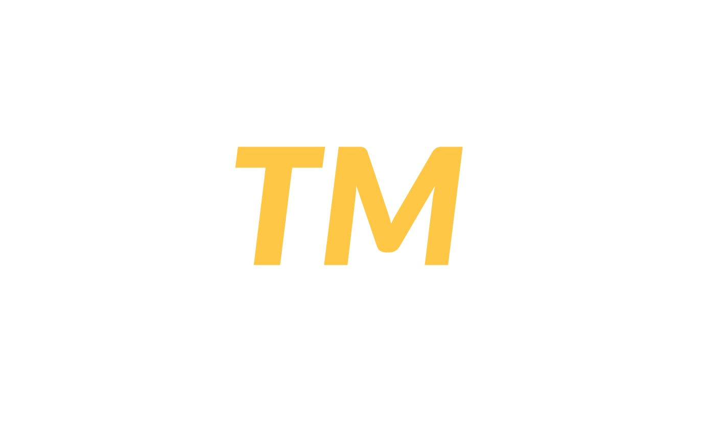
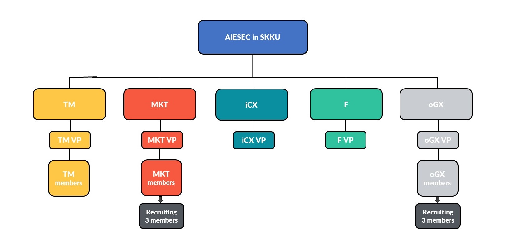

Structure
2021 AIESEC SKKU Structure
▲ 2021 Term AIESEC in SKKU의 구조
AIESEC SKKU는
지부(LC, Local Committee)의 전반적인 활동을 총괄하는 지부장(LCP, Local Committee President)과
TM(인재관리부서, Talent Management), MKT(홍보전략부서, Marketing),
F&L(재무관리부서, Finance & Legislative), oGX(해외교류중개부서, Outgoing Global eXchange)
4개의 부서로 구성되어 있습니다. 성균관대 지부는 청년들이 세계무대에서 활동하는 데
기반이 될 Global Exchange Program을 원활하게 제공하기 위해
부서 간 최상의 시너지를 발휘합니다.
각 부서에는 부서를 책임지는 부서장(VP, Vice President)이 있고 부서장들은 AIESEC SKKU의 원활한 운영과 부서 멤버들이 만족스러운 AIESEC 활동을 할 수 있도록 각자의 영역에서 최선을 다하고 있습니다. 함께 AIESECer가 되어 학교 동아리 활동 속에서는 경험하기 어려운 구조화된 조직 속에서 각 부서별로 특화된 업무를 체계적으로 수행하는 경험을 통해 리더십을 함양하고 실무 경험을 쌓아보세요!
💡 AIESEC SKKU 2021 Term의 네 부서의 연관성에 대해 단계별로 보다 쉽게 소개해드립니다!
➊ 🌍 해외교류중개부서(oGX)
oGX = Outgoing Global eXcahnge
AIESEC SKKU 2021 Term의 유일한 Front Office 부서인 oGX는
해외에 나가 교류하고 싶은 학생분들을 도와 컨설팅을 진행하고 해외로 나가는 순간부터 한국에 돌아오기까지의
모든 과정을 책임지는 부서입니다. AIESEC이 전달하려는 가치인, 리더십 계발과 국가 간의 교류를 위해 반드시 필요합니다.
즉, 해외교류중개부서는 해외교류를 원하시는 분들이 해외로 갈 수 있도록 중개하고 도와주는 부서일 뿐,
해외봉사를 ‘직접’ 하는 부서는 아닙니다!
AIESEC의 멤버로 활동하시면, 해외봉사를 가실 때 누릴 수 있는 베네핏(Benefit)이 있지만 이는 선택 사항입니다.
🔍 주요 업무: 대학생 해외봉사 프로그램 연결 및 지원자 선발/관리.
➋ 📈 재무관리부서(F&L)
 F&L = Finance & Legislation
F&L = Finance & Legislation
해외교류중개부서에서 합리적인 가격에 사람들이 교류할 수 있도록 도와주며, 지부의 전체적인 재정을 관리하는 부서입니다.
AIESEC은 UN 산하의 비영리 단체이므로, 단체의 지속가능성을 위해서는 재정관리가 필요합니다. 또한, AIESEC은 전세계적으로
큰 단체이기 때문에 다양한 규칙들도 관리합니다. 전체적인 지부재정관리와 부서 간의 시너지가 가장 중요해서
지속적인 피드백을 다른 부서와 주로 주고받는 부서입니다.
🔍 주요 업무: 지부의 재정 관리, 법률 수정/관리
➌ 📢 홍보전략부서(MKT)
 MKT = Marketing
MKT = Marketing
전세계적으로는 많이 알려진 AIESEC은, 아직 국내에서 인지도가 낮아 지속적인 브랜딩과 홍보가 필요합니다.
따라서 홍보전략부서에서, AIESEC을 사회적으로 알리는 전략을 세우고 적극적으로 홍보합니다.
또한, 해외교류중개부서에서 관리하는 AIESEC의 각종 해외교류 프로그램을 각종 매체에 다양한 방식으로 홍보합니다.
🔍 주요 업무: AIESEC 브랜딩을 위한 홍보물 제작, 온라인 채널 관리
➍ 👥 인재관리부서(TM)
 TM = Talent Management앞서 언급한 세 부서에 속한 부원들이 자신의 잠재력을 발현시키고 동아리 활동에 만족하는지, 성장하고 있는지를 보조하고 관리하는 부서입니다. 멤버들의 리더십을 함양시키고자 다양한 프로그램을 기획하며, 그들과의 상담, 설문조사 등을 통해 어떠한 상황인지 판단하여 그들이 가진 역량을 끌어내고 더 성장할 수 있도록 도와줍니다.
🔍 주요 업무: 신입멤버 리쿠르팅, AIESEC SKKU의 멤버 관리/교육, 동아리 전체 모임 기획

▲ AIESEC SKKU의 구조도
※조직도에 있는 인원수는 리쿠르팅 현황에 따라 조정될 수 있습니다.
❖ 정리하면!
① 해외교류중개부서에서 다양한 해외교류 상품들을 선택해 희망자들에게 맞춤 관리를 제공하고② 그 상품들과 AIESEC에 대해 많은 사람들이 관심을 가질 수 있도록 홍보전략부서에서 알리고 브랜딩하며,
③ 마지막으로 인재관리부서와 재무관리부서에서 지부의 지속가능 및 유지를 위해 인적자원과 재정을 관리합니다.